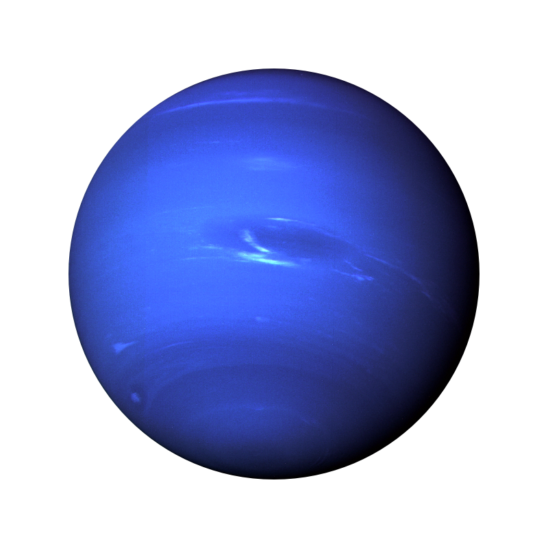

The Gas Giants
| Planet |  |
 Jupiter |
 |
 |
|---|---|---|---|---|
| Mass | 1.90 x 1027 | 5.69 x 1026 | 8.68 x 1025 | 1.02 x 1026 |
| Diameter | 142,800 | 120660 | 51118 | 49528 |
| Mean density (kg/m3) | 1314 | 690 | 1290 | 1640 |
| Escape velocity (m/s) | 59500 | 35600 | 21300 | 23300 |
| Average distance from Sun | 5.203 AU (778,412,020 km) | 9.537 AU (1,426,725,400 km) | 19.19 AU (2,870,972,200 km) | 30.07 AU (4,498,252,900 km) |
| Average distance from Sun | 5.203 AU (778,412,020 km) | 0.44 (10.2 Earth hours) | 0.72 (17.9 Earth hours)(retrograde) | 0.67 (19.1 hours) |
| Revolution period | 11.86 | 29.46 | 30,685 (84 Earth years) | 60,190 (164.8 Earth years) |